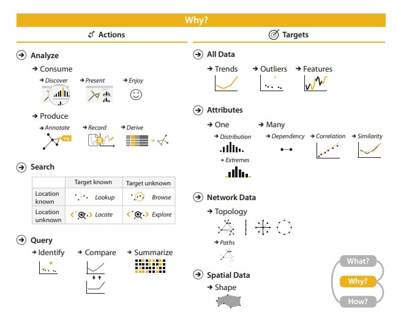
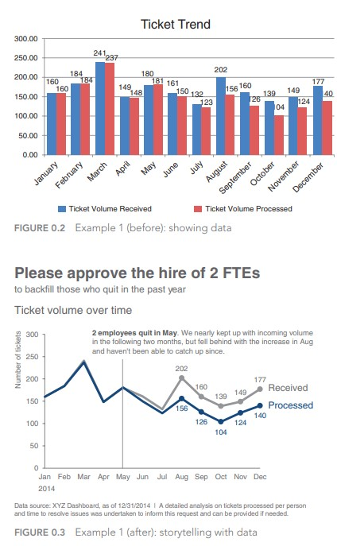
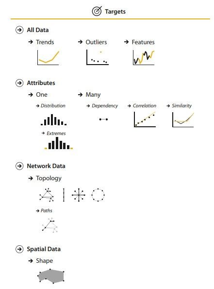
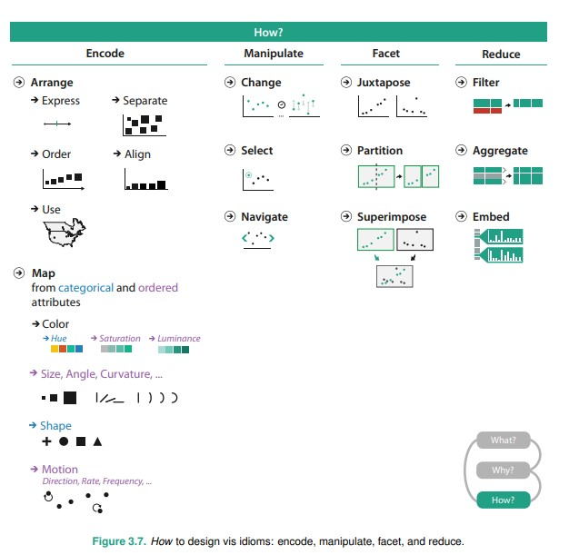

4a: Task abstraction
Why do data viz?
Why: An overview
Visualization Analysis and Design, chapter 3, Munzner
Why task abstraction?
Thinking about why in an abstract form, rather than the domain specific way users often talk about data viz.
This will allow us a framework to discuss use cases, which may on surface look different.
Actions / Targets
This proposed taxonomy is from Munzner's framework (Visualization Analysis and Design, chapter 3)
Actions in this case is a verb, and targets are nouns.
Reading: A multi-level typology of abstract visualization tasks, Bremmer, Munzner
Reading: Taxonomy of interactive dynamics for visual analysis, Schneiderman, Heer
Viz designer or user?
Are you consuming the visualization or producing it?
Viz tools fall somewhere along a continuum from specific to general.
On the general side, tools are flexible and allow users many choices what to make.
On the specific side, the tool is curated and choices are limited in how an end user can interact with the data set.
Exploratory vs Explainatory
Storytelling with data, chapter 1, Nussbaumer
3-levels of actions

Visualization Analysis and Design, chapter 3, Munzner
For more specifics read up her white paper linked here.
Targets
Visualization Analysis and Design, chapter 3, Munzner
Industry perspective on why data viz
| Sample job | Why data viz | Tools |
Data scientist |
Getting insights | Python, R. Quick and dirty charts |
Business analyst |
Insights + simple dashboards for client / management | Tableau, PowerBI, Qlik |
Data journalist |
Storytelling. Presentation to make things clear | Graphics / animation tools and libraries |
Code artist |
Presentation to impress | 3D / Animation / sound / interaction libraries |
Product frontend |
Building a custom product for a specific usecase | D3, JS and CSS frameworks |
Product backend (e.g. regulator) |
Building a custom product for a specific usecase | tech architecture, database and warehousing, backend and devops |
How: An overview
We'll cover definitions and sample idioms later in the course.
On the project
Project: pointers
- Look at what data you have, and decide why you are doing the visualization, before you start work.
- How you build the visualization is typically an iterative process. Example.
- The process is often more interesting than the final outcome in terms of learning. Do share that.
- What steps did you take (or not take) in order to reach your final product?
- What lessons did you take away? Anything you wished to do for the project but didn't have time / resources to complete?
I wish it wasn't the case but the course needs to be graded. However, I seriously don't care as much as long as proof of work is done.
Questions?
Chi-Loong | V/R